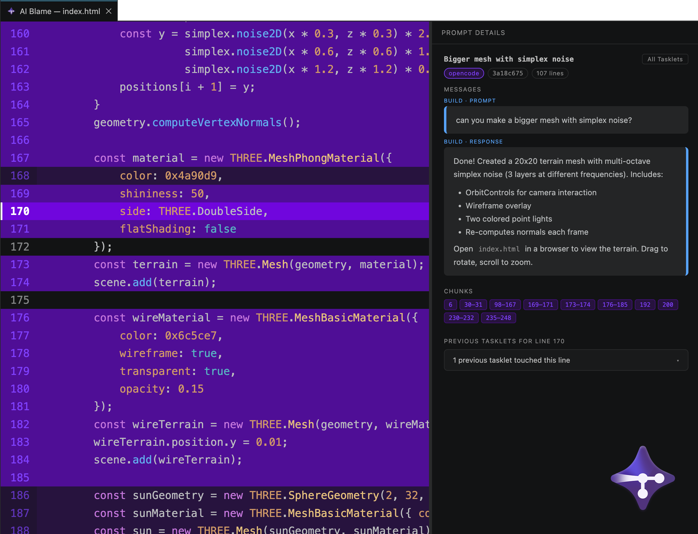

Know exactly which prompt
wrote that line.
Tracybot traces every AI-generated line of code back to the prompt that created it — automatically, invisibly, right inside VS Code. No workflow changes, no manual tagging.

Your codebase forgot who wrote what
Agents move fast across dozens of files. A week later, nobody — including you — can say which lines came from a prompt, which prompt, or why.
AI writes fast. Reviews don't.
Dozens of AI-touched files land in one sitting. Knowing what's new versus what's yours shouldn't require re-reading every diff.
git blame just says you
Every AI edit lands under your name and commit. The moment something breaks, the trail to the actual prompt is already gone.
No record of the "why"
The prompt behind a change explains intent that the diff alone never will. Once the terminal scrolls away, it's gone.
Traceability, without the overhead
Tracybot records a snapshot at every AI interaction and keeps it out of your way — until you need it.
AI Traceability
Map any line of AI-generated code back to the exact prompt that created it — click a line, see the conversation.
Non-Invasive Storage
Snapshots live in hidden Git commits and refs. Your visible history, branches, and diffs stay exactly as clean as before.
Seamless Integration
Works with OpenCode CLI, Claude Code, and Codex CLI. The VS Code extension detects and installs plugins for whichever you have.
Audit Trail
Review the full history of AI interactions on any file — verify, debug, or simply understand where the code came from.
Team Sync
Push traces to your remote alongside your code, so the whole team can see AI provenance — not just you, locally.
Research Mode
Optional, opt-in sharing of your Tasklet history for an independent study on AI-assisted coding behavior. Off by default.
Set up once. Forget it's there.
Tracybot slots into a workflow you already have — nothing to change about how you prompt your agent.
Install the extension
Get Tracybot from the VS Code Marketplace. It's the entry point to everything else.
Open your repo
Tracybot detects it isn't initialized yet and sets itself up automatically — no commands required.
Agents get wired up
Whichever of OpenCode, Claude Code, or Codex CLI you have installed gets its plugin installed automatically, too.
Click "AI Blame"
Prompt your agent like normal. Whenever you want the story behind a line, it's one click away.
python /path/to/tracybot/init.py /path/to/your-target-repository
One extension, every agent you use
Use more than one agent on the same project — Tracybot records which one produced each change.
OpenCode CLI
Install the opencode-plugin to record snapshots automatically during AI interactions. Requires OpenCode CLI.
Claude Code
Install the claude-code-plugin, wired in via hooks in ~/.claude/settings.json.
Codex CLI
Install the codex-plugin, wired in via hooks in ~/.codex/hooks.json.
Help improve how AI-assisted coding is studied
Research Mode lets you opt in — per repository, off by default — to share your Tasklet history for an independent research study on AI-assisted coding behavior. Consent is never machine-wide, and it can be turned off for any repo at any time.
Your own hand-written code is never collected, regardless of tier. A random, per-machine participant ID is used instead of your Git identity.
Read the full policy- 01Model & timestamps. File extensions, line-change counts, ownership stats. No prompt text, no code.
- 02Prompt & response text. Fenced code blocks are redacted before anything leaves your machine.
- 03Diff hunks. Only what each Tasklet touched — never a full file or repo snapshot.
Start tracing your AI-generated code today
Free, open source, and ready in under a minute.